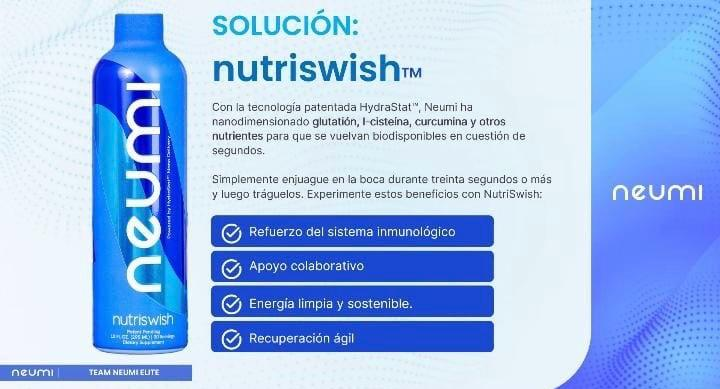

MARCAS DISTRIBUIDAS
NEUMI-OMNILIFE-4LIFE-SHADDAI-ATOMI-HGW-.
PRODUCTOS MARCA NEUMI
Todos los productos son Bioadaptables
NUTRISWISH-NEUMI
Este producto contiene glutation un Antioxidante maestro, actua com protector y desintoxicante de las celular humanas. Es fundamental para la salud, el rendimiento fisico, la proteccion y la longevidad de cada celula humana, el glutation es una de las moleculas mas investigadas a nivel mundial.
NEUMI-SKIN

Spray facial de 3.4 onzas líquidas (nano-formulado) con glutatión, colágeno y ácido hialurónico, cuidado facial y firme, espray facial minimizador de poros, reduce líneas finas y arrugas.

Nunca se perdió un día sin piel neumi. Fabricado con colágeno, curcumina y glutatión. Asegúrese de completar sus productos para el cuidado de la piel. Compra el spray facial neumi skin para tu piel hidratada, joven y saludable.
NEURO
Libera tu potencial cognitivo con Neuro-Neumi, mejora el flujo sanguineo cerebral, oxigeno y nutrientes a los musculos y reparacion de tejido muscular.Mejora estado de animo, concentracion, memoria y muho mas.
PRODUCTOS MARCA OMNILIFE
Todos los productos son Bioadaptables
OMNIPLUS
Omniplus de Omnilife es un suplemento alimenticio en polvo y liquido que combina una amplia variedad de nutrientes, incluyendo vitaminas, minerales, aminoácidos y antioxidantes. Su fórmula está diseñada para apoyar el sistema inmunológico, mejorar la energía y promover el bienestar general. Ideal para personas que buscan complementar su dieta diaria con nutrientes esenciales.
BIOCROS
Biocros de Omnilife es un suplemento alimenticio que combina extractos de plantas, vitaminas y minerales, diseñado para fortalecer el sistema inmune, mejorar la salud digestiva y proporcionar energía. Su fórmula natural está pensada para promover el bienestar general y apoyar las funciones vitales del cuerpo.
POWER MAKER

Power Maker de Omnilife es un suplemento alimenticio diseñado para mejorar el rendimiento físico y mental. Contiene una mezcla de ingredientes naturales, como aminoácidos, vitaminas y minerales, que ayudan a aumentar la energía, la resistencia y la concentración, siendo ideal para personas activas o que necesiten un impulso extra en su día a día.

COGNOS
Cognos de Omnilife es un suplemento alimenticio diseñado para mejorar la función cerebral y apoyar la salud cognitiva. Contiene una combinación de ingredientes como vitaminas, minerales y extractos naturales que promueven la concentración, la memoria y la claridad mental, ayudando a combatir el estrés y la fatiga mental. Es ideal para personas que buscan mantener su agudeza mental en condiciones óptimas.
UZO

Uzo Supreme de Omnilife es un suplemento nutricional que combina ingredientes naturales con propiedades antioxidantes y antiinflamatorias. Su fórmula está diseñada para apoyar el sistema inmunológico, mejorar la energía y promover el bienestar general. Ideal para personas que buscan fortalecer su salud de manera integral.
PRODUCTOS MARCA 4LIFE
Todos los productos son Bioadaptables
FACTOR TRANSFER PLUS

4Life Factor Plus es un suplemento que ayuda a fortalecer el sistema inmunológico y a mejorar la salud en general. Su fórmula exclusiva combina Transfer Factor con antioxidantes y nutrientes esenciales para apoyar la función celular y promover una mayor energía y bienestar. Ideal para quienes buscan un impulso natural para su salud.
FACTOR TRANFER

4Life Factor Transfer es un suplemento que fortalece el sistema inmunológico a través de su exclusiva fórmula basada en Transfer Factor. Este producto ayuda a mejorar la respuesta inmunitaria y a mantener la salud general, proporcionando un apoyo natural y efectivo para el organismo. Ideal para quienes buscan optimizar su bienestar.
TRANSFER FACTOR RIOVIDA
Transfer Factor RioVida de 4Life es un suplemento líquido que combina Transfer Factor con jugos naturales de frutas y antioxidantes. Su fórmula está diseñada para fortalecer el sistema inmunológico, mejorar la salud celular y proporcionar energía, ofreciendo una manera deliciosa y efectiva de apoyar el bienestar general.
FACTOR TRANFER BCV
Factor Transfer BCV de 4Life es un suplemento que fortalece el sistema inmunológico mediante su exclusiva fórmula de Transfer Factor, combinada con ingredientes naturales como vitamina C, vitamina B6 y Zinc. Está diseñado para apoyar la salud celular, aumentar la energía y mejorar el bienestar general de manera efectiva. Ideal para quienes buscan fortalecer sus defensas de forma natural.
PRODUCTOS MARCA SHADDAI
Todos los productos son Bioadaptables
Los productos Shaddai están diseñados para promover un estilo de vida saludable, enfocados en la nutrición, el bienestar integral y el cuidado personal. La marca ofrece una amplia gama de suplementos nutricionales que incluyen vitaminas, minerales, antioxidantes y fórmulas específicas para mejorar la energía, fortalecer el sistema inmune, mejorar la digestión y apoyar el bienestar general. Además, Shaddai se especializa en alimentos naturales, con productos que buscan proporcionar una nutrición equilibrada a través de ingredientes puros y de alta calidad. También cuenta con una línea de productos para el cuidado personal, que incluye cremas, aceites y otros tratamientos diseñados para cuidar y mejorar la salud de la piel. Con un firme compromiso con la pureza de sus ingredientes y la efectividad de sus fórmulas, Shaddai se destaca por ofrecer productos que no solo buscan mejorar la salud física, sino también brindar un apoyo integral al bienestar emocional y mental, siempre con un enfoque natural y accesible.


El servicio al usuario, tanto a nivel nacional como internacional, es un componente esencial para garantizar la satisfacción y fidelización de los clientes en un mundo globalizado. En su ámbito nacional, este servicio se enfoca en ofrecer atención personalizada, rápida y eficiente, adaptándose a las necesidades específicas de los consumidores dentro de un mismo país. Para ello, las empresas implementan canales de comunicación accesibles, como líneas telefónicas, correos electrónicos, plataformas de chat en línea y redes sociales, con el fin de resolver inquietudes, problemas o gestionar solicitudes de forma oportuna. Por otro lado, el servicio al usuario internacional implica desafíos adicionales, como la adaptación a diferentes idiomas, culturas y zonas horarias. Las compañías deben ser capaces de manejar consultas y problemas de clientes de diversas partes del mundo, lo que requiere una infraestructura de soporte multilingüe y un equipo entrenado para ofrecer respuestas coherentes y adecuadas a cada contexto. La clave para un buen servicio internacional es la empatía, la disponibilidad constante y la capacidad de ofrecer soluciones efectivas, asegurando que cada cliente, independientemente de su ubicación, se sienta valorado y comprendido. En ambos casos, el enfoque debe ser siempre la mejora continua, a través de la retroalimentación de los usuarios y la optimización de los procesos internos, para garantizar una experiencia excepcional.